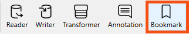
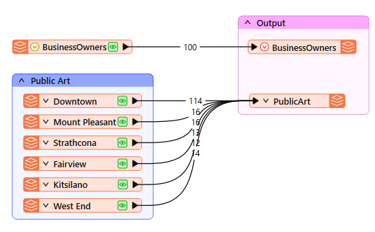
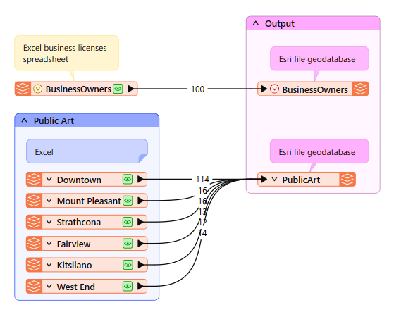

Learning Objectives
After completing this lesson, you’ll be able to:
- Explain the benefits of documenting your workspace.
- Add a bookmark to explain the purpose of sections of your workspace.
- Add annotations to your workspace to explain the purpose of specific feature types or transformers in your workspace.
Instructions
In this lesson, you will:
- Scroll down to read the text below.
- Complete the exercise by following the steps.
- Complete the Quiz toward the bottom of the page.
- Optional: Let us know if you found this lesson relevant to your role by filling out the survey at the bottom of the page.
- Click 'Next' to mark the lesson complete.
Resources
Why Document Your Workspaces?

Sven has created a workspace that converts his data from Excel to geodatabase. However, before he finishes working on this workspace, Sven needs to add bookmarks and annotations. Bookmarks and annotations document your workspace. If you have any experience programming, documenting your workspace is like commenting on or documenting your code. These steps ensure that if your primary FME author goes on vacation or leaves the company, documentation will help the next FME author maintain, troubleshoot, and expand your organization's FME workspaces.
1) Open Starting Workspace
- Start FME Workbench (2026.1 or later).
- Open the starting workspace (C:\FMEData\Workspaces\IntegrateDataWithTheFMEPlatform\document-your-workspace.fmw).
2) Add Bookmarks
As a first step, we will use bookmarks to describe sections of the workspace. Bookmarks help you organize your workspace into logical sections. They make it easier to tell at a glance what each workspace section is doing. They also offer advanced functionality useful for working with large workspaces, such as zooming to a specific bookmark or collapsing bookmarks to reduce visual clutter.
Let's add two bookmarks to the workspace to surround the reader and writer feature types.
- Select all the public art feature types.

- Then click Bookmark on the toolbar.

After clicking the button, the colored bookmark appears and surrounds the feature types. You can then type in a name.
- Name the bookmark “Public Art.”
- Add another bookmark around the BusinessOwners and PublicArt writer feature types and name it “Output.”
- Your workspace should now look like this:

3) Add Annotations
We also want to add a note describing the formats the workspace supports.
- Add an annotation by right-clicking on the BusinessOwners reader feature type
- Click Attach Annotation or press CTRL key (⌘ or Shift on Mac) + K.
- Edit the text to say: “Excel business licenses spreadsheet.”

This annotation makes it easy to identify the data formats the workspace reads and writes.
- Repeat the process for the other reader feature types, resizing the bookmarks by clicking and dragging their edges as needed.
- Your workspace should now have bookmarks and annotations to make it easier to understand at a glance. There is no "right answer" here, but your workspace should look something like this.

Leave Us Feedback on This Lesson